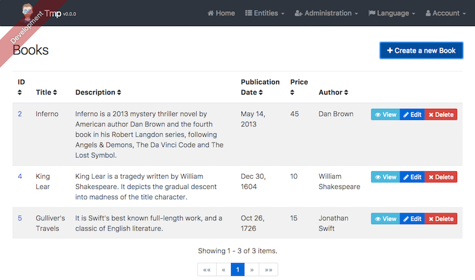

Once you have created your application, you will want to create entities. For example, you might want to create the book entity, which represents a book. For this, you will need:
If you created your application with MongoDB instead of a more classical SQL/JPA solution, JHipster will still generate your entity correctly (you will have a MongoDB document instead of a JPA entity).
The "entity" sub-generator will help you to create most of this code, but it isn't magical, so you will need customize some of the generated code.
Let's create the "Foo" entity, which has a text field and a date field.
Create the entity with the sub-generator. For instance, for creating the "Foo" entity, please type:
yo jhipster:entity foo
If you have followed our development guide and have your application running with "hot reload", everything should just work out of the box: your running application should be updated, as well as your database and even your browser. Just go to http://localhost:9000/#/foo to use the generated default CRUD page.
If you didn't use hot reload, you will have a little more work to do (see the next part on Liquibase for more information), and of course you will need to restart your application to see your changes.
JHipster uses Liquibase to update its database schema. The Liquibase configuration is located in the src/main/resources/config/liquibase folder.
If you have used hot reload in the previous step, JHipster has automatically created a new file named src/main/resources/config/liquibase/changelog/db-changelog--002.xml.
If you didn't use hot reload, you have to create this file yourself (that's why we recommend using hot reload):
src/main/resources/config/liquibase/changelog/db-changelog--002.xmlThe generated entity has:
Of course, you will have to customize those fields for your specific entities.
JHipster has created a Spring Data JPA repository called FooRepository and a Spring MVC REST Controller called FooResource.
Those files contain all the basic CRUD operations, and don't need to be modified if your needs are simple.
Of course, if you want some more complex business behaviors, you might need to add a Spring @Service class, using the service sub-generator.
JHipster has created three JavaScript files for you:
src/main/webapp/scripts/foo/router.jssrc/main/webapp/scripts/foo/controller.jssrc/main/webapp/scripts/foo/service.js
Those files have been automatically added to your index.html file, just after the other existing AngularJS scripts.
JHipster has created a foos.html view, which has the basic CRUD operations.
This view will be where most of the work will occur, depending on the attributes you have added to your entity, and your business requirements.
You can test your "foo" controller on http://localhost:8080/#/foo.
It should look like this:
